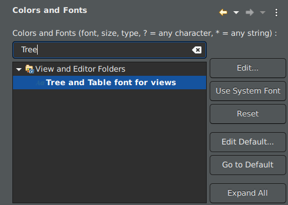
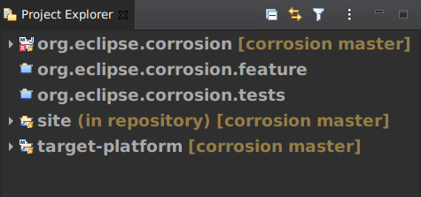
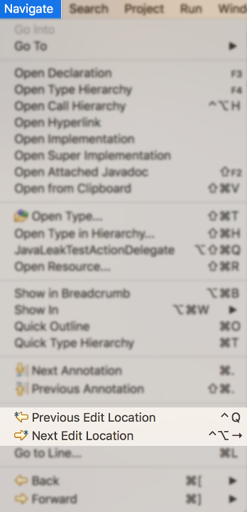
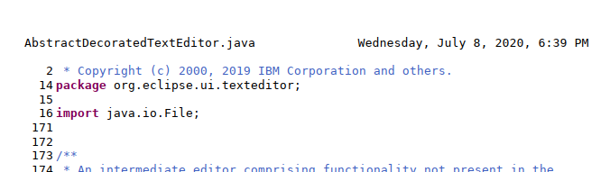
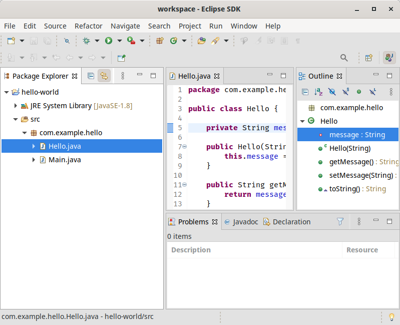
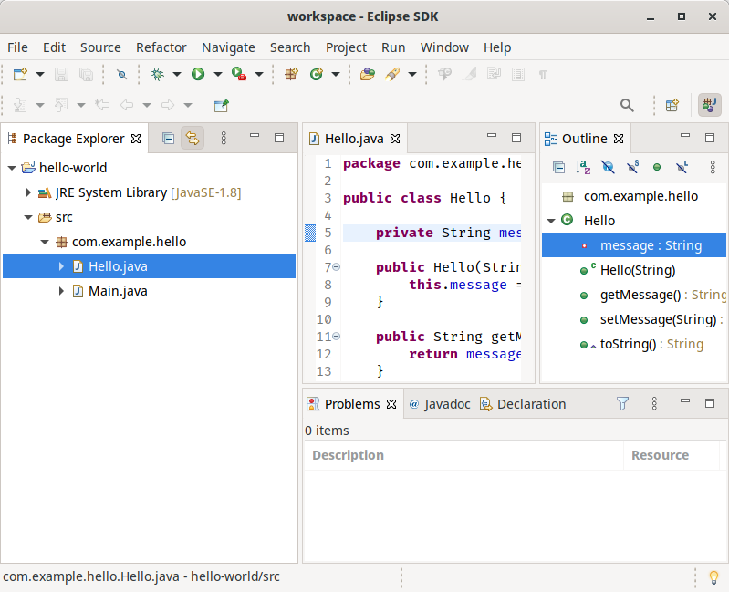
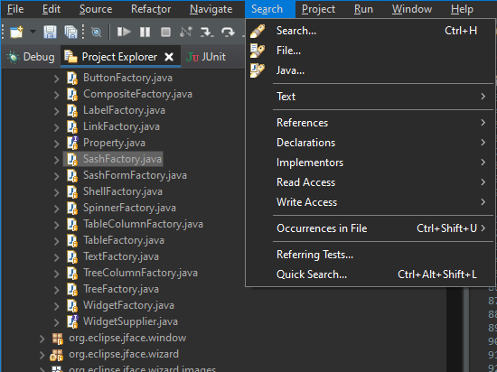
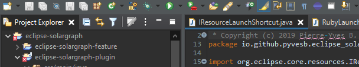
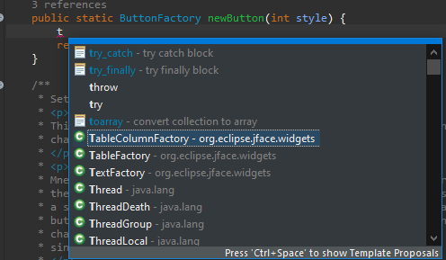

Views, Dialogs and Toolbar

The Project Explorer is an example of a view that gets affected by this font preference.
Text Editors
The last 15 edit locations are now remembered. For convenience, similar edit locations in close proximity to each other are also merged so that each of the 15 remembered locations remains distinct.

How to use
Two new keyboard shortcuts are introduced:
-
Ctrl+Alt+LEFT_ARROW (or on Mac Ctrl+Opt+LEFT_ARROW) navigates to the most recent edit location, just as Ctrl+Q always has in prior releases.
However, now continuing to hold Ctrl+Alt and then pressing LEFT_ARROW again begins a traversal through the history of prior edit locations, with each additional press of LEFT_ARROW moving a step further back in history. Once traversal stops, future Ctrl+Alt+LEFT_ARROW actions are now temporarily anchored to this older historical location for easy exploration of that code region.
The classic Ctrl+Q mapping has been likewise enhanced with this new functionality, so that Ctrl+Q and Ctrl+Alt+LEFT_ARROW are synonymous.
- Ctrl+Alt+RIGHT_ARROW (or on Mac Ctrl+Opt+RIGHT_ARROW) conversely moves the anchor forward through edit history, so after traversing backward with Ctrl+Alt+LEFT_ARROW, you can go forward again by holding Ctrl+Alt and repeatedly pressing RIGHT_ARROW. A new menu item has likewise been added for this forward navigation as well.
New edit locations are always inserted at the end, so original historical ordering is always maintained. New edits also reset the last location "anchor" back to the most recent edit, so that pressing Ctrl+Alt+LEFT_ARROW once again brings you to the most recent edit rather than a historical one.

Themes and Styling
Old:

New:

Old:

New:

Old:

New:



Debug
\0 - null byte.
If interpretation is enabled, any null byte will be stripped and not shown in console view. This is most relevant for the Linux platform where a null byte in console view
causes anything after it on the same line to be not rendered.
This feature is disabled by default. You can enable it on the Run/Debug > Console preference page.